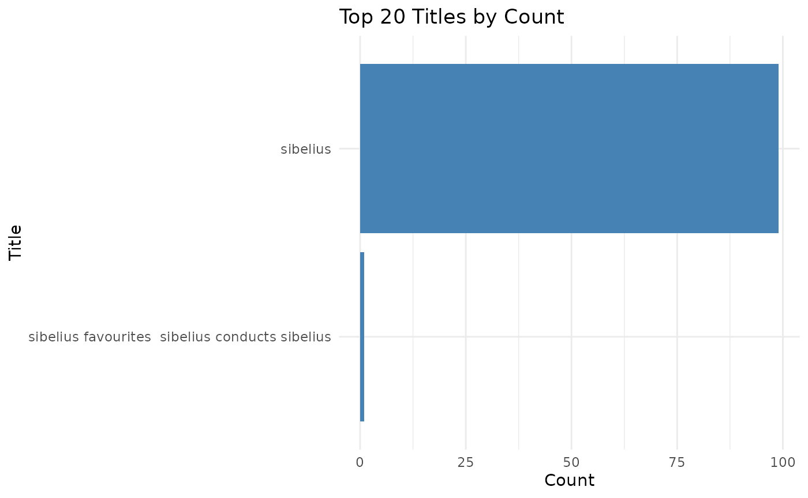
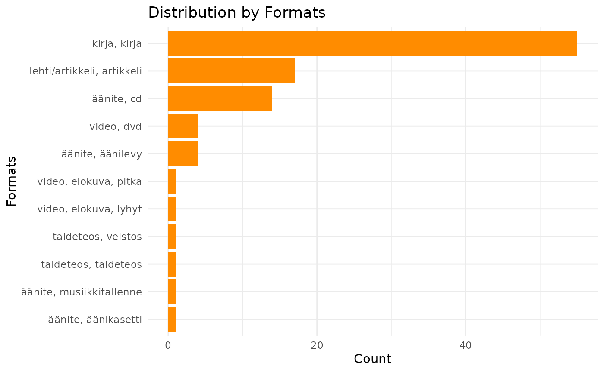
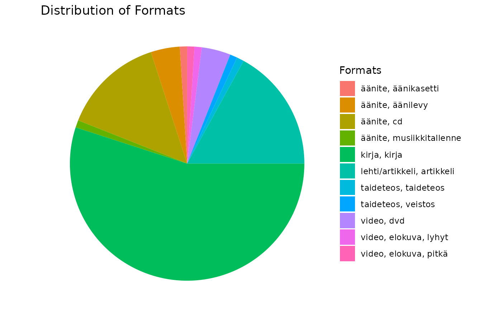
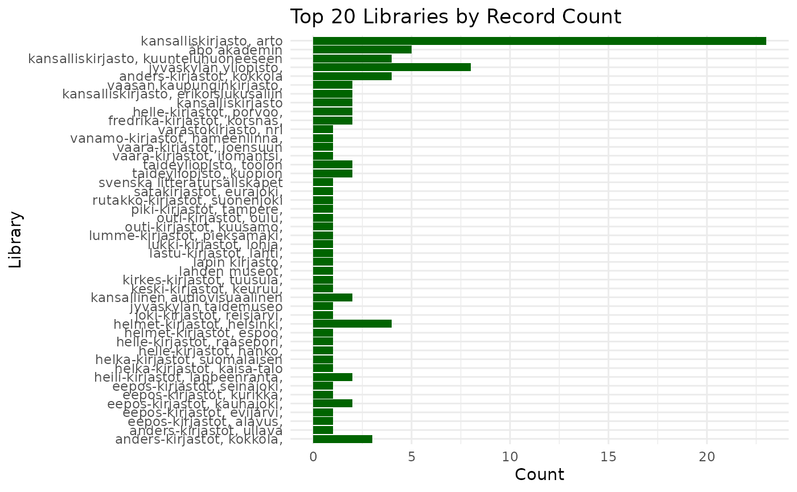
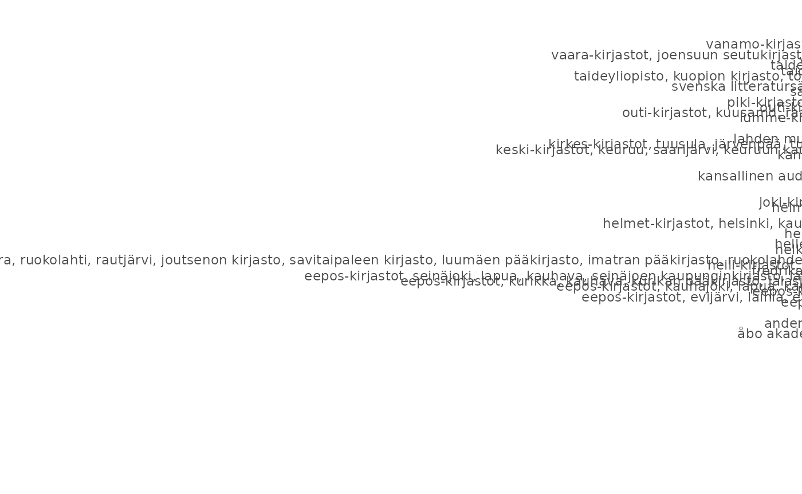
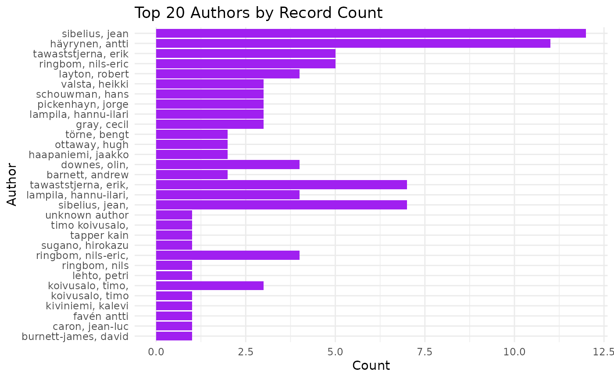
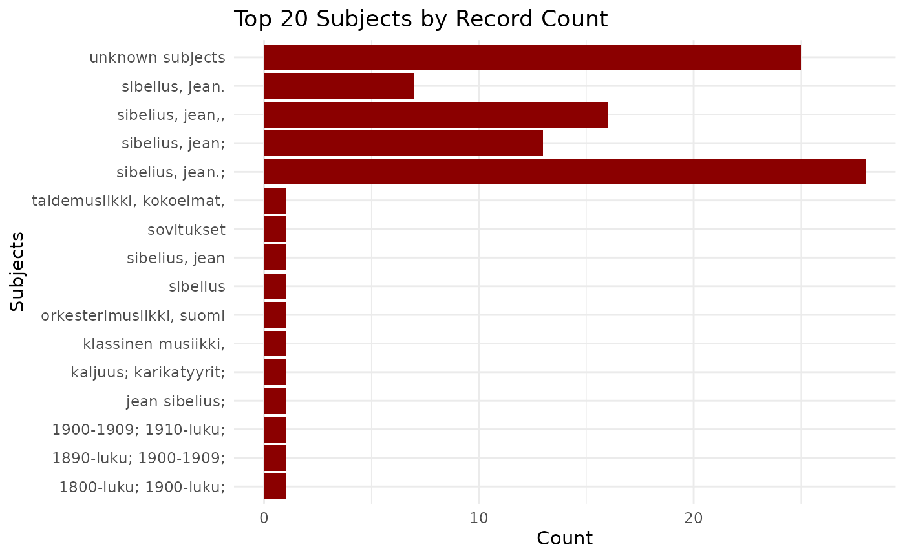

Refine, integrate and analyse Finna metadata
Source:vignettes/articles/refinemetadata.Rmd
refinemetadata.RmdIntroduction
This vignette provides an overview of how to use the finna package.
Refine using refine_metadata()
function
library(finna)
sibelius_data <- search_finna("sibelius")
refined_data <- refine_metadata(sibelius_data)
print(refined_data)## # A tibble: 100 × 8
## Title Author Year Language Formats Subjects Library Series
## <chr> <chr> <chr> <chr> <chr> <chr> <chr> <chr>
## 1 Sibelius favourites : … Sibel… 2001 Unknown… Äänite… orkeste… Lapin … Unkno…
## 2 Sibelius Tappe… 1967 Unknown… Taidet… Unknown… Jyväsk… Unkno…
## 3 Sibelius Favén… Unkn… Unknown… Taidet… kaljuus… Lahden… Unkno…
## 4 Sibelius Tawas… 2003 fin Kirja,… Sibeliu… Anders… Unkno…
## 5 Sibelius Ringb… 1948 fin Kirja,… Sibeliu… Eepos-… Unkno…
## 6 SIBELIUS TÖRNE… 1945 fin Kirja,… SIBELIU… Helle-… Unkno…
## 7 Sibelius Lampi… 1995 fin Kirja,… Sibeliu… Kansal… Unkno…
## 8 Sibelius Lampi… 2005 fin Kirja,… Sibeliu… Kansal… Unkno…
## 9 Sibelius Lampi… 1984 fin Kirja,… Sibeliu… Kansal… Unkno…
## 10 Sibelius Tawas… 1997 fin Kirja,… Sibeliu… Kansal… Unkno…
## # ℹ 90 more rows
integrate using integrate_metadata()
Function
finna_data <- search_finna("sibelius")
other_data <- tibble::tibble(
Title = c("Sibelius Symphony No. 5", "Finlandia", "Valse Triste"),
Rating = c(5, 4, 3)
)
integrated_data <- integrate_metadata(finna_data, other_data, key = "Title")
print(integrated_data)## # A tibble: 103 × 10
## id Title Author Year Language Formats Subjects Library Series Rating
## <chr> <chr> <chr> <chr> <chr> <chr> <chr> <chr> <chr> <dbl>
## 1 lapinkirj… Sibe… Sibel… 2001 NA Äänite… orkeste… Lapin … NA NA
## 2 jtm.15877… Sibe… Tappe… 1967 NA Taidet… NA Jyväsk… NA NA
## 3 lahdenmus… Sibe… Favén… NA NA Taidet… kaljuus… Lahden… NA NA
## 4 anders.19… Sibe… Tawas… 2003 fin Kirja,… Sibeliu… Anders… NA NA
## 5 eepos.136… Sibe… Ringb… 1948 fin Kirja,… Sibeliu… Eepos-… NA NA
## 6 helle.110… SIBE… TÖRNE… 1945 fin Kirja,… SIBELIU… Helle-… NA NA
## 7 arto.0008… Sibe… Lampi… 1995 fin Kirja,… Sibeliu… Kansal… NA NA
## 8 arto.0009… Sibe… Lampi… 2005 fin Kirja,… Sibeliu… Kansal… NA NA
## 9 arto.0052… Sibe… Lampi… 1984 fin Kirja,… Sibeliu… Kansal… NA NA
## 10 arto.0053… Sibe… Tawas… 1997 fin Kirja,… Sibeliu… Kansal… NA NA
## # ℹ 93 more rows
Analyze using analyze_metadata()
Function
sibelius_data <- search_finna("sibelius")
refined_data <- refine_metadata(sibelius_data)
analysis_results <- analyze_metadata(refined_data)
print(analysis_results)## $format_distribution
## # A tibble: 11 × 2
## Formats n
## <chr> <int>
## 1 Kirja, Kirja 55
## 2 Lehti/Artikkeli, Artikkeli 19
## 3 Äänite, CD 11
## 4 Video, DVD 4
## 5 Äänite, Äänilevy 4
## 6 Video, Elokuva, lyhyt 2
## 7 Arkisto/Kokoelma, Arkistosarja 1
## 8 Taideteos, Taideteos 1
## 9 Taideteos, Veistos 1
## 10 Video, Elokuva, pitkä 1
## 11 Äänite, Musiikkitallenne 1
##
## $year_distribution
## # A tibble: 38 × 2
## Year n
## <chr> <int>
## 1 1997 9
## 2 1948 8
## 3 1999 8
## 4 2003 7
## 5 1945 6
## 6 1998 6
## 7 1968 5
## 8 Unknown Year 4
## 9 1949 3
## 10 1984 3
## # ℹ 28 more rows
##
## $author_distribution
## # A tibble: 51 × 2
## Author n
## <chr> <int>
## 1 Häyrynen, Antti 12
## 2 Sibelius, Jean 10
## 3 Layton, Robert 5
## 4 Downes, Olin, Sjöblom, Paul, Jalas, Jussi 4
## 5 Ringbom, Nils-Eric 4
## 6 Pickenhayn, Jorge Oscar 3
## 7 Schouwman, Hans 3
## 8 Tawaststjerna, Erik 3
## 9 Tawaststjerna, Erik, Tawaststjerna, Erik T. 3
## 10 Valsta, Heikki 3
## # ℹ 41 more rows1. Applying the visualize_year_distribution()
Function
sibelius_data <- search_finna("sibelius")
refined_data <- refine_metadata(sibelius_data)
analysis_results <- analyze_metadata(refined_data)
visualize_year_distribution(analysis_results$year_distribution)
1.1 Line plot of yearly distribution
library(finna)
sibelius_data <- search_finna("sibelius")
refined_data <- refine_metadata(sibelius_data)
visualize_year_distribution_line(refined_data)## Warning: There was 1 warning in `mutate()`.
## ℹ In argument: `Year = as.numeric(Year)`.
## Caused by warning:
## ! NAs introduced by coercion2. Applying the visualize_top_20_titles()
Function
This function will visualize the top 20 titles from your dataset.
# Assuming you have a tibble with Finna metadata called `refined_data`
top_20_titles_plot <- visualize_top_20_titles(refined_data)
# To display the plot
print(top_20_titles_plot)
2.1 Visualize Heatmap of Titles by Year
library(finna)
sibelius_data <- search_finna("sibelius")
refined_data <- refine_metadata(sibelius_data)
visualize_title_year_heatmap(refined_data)3. Applying the visualize_format_distribution()
Function
This function visualizes the distribution of the records by format.
# Plot the format distribution
format_distribution_plot <- visualize_format_distribution(refined_data)
# To display the plot
print(format_distribution_plot) ### 3.1 Visualize Format Distribution as Pie Chart
library(finna)
sibelius_data <- search_finna("sibelius")
refined_data <- refine_metadata(sibelius_data)
visualize_format_distribution_pie(refined_data)
4. Applying the
visualize_library_distribution() Function
This function shows the distribution of the records by library.
# Plot the library distribution
library_distribution_plot <- visualize_library_distribution(refined_data)
# To display the plot
print(library_distribution_plot) ### 4.1 Visualize Correlation Between Formats and Libraries
This function shows the distribution of the records by library.
library(finna)
sibelius_data <- search_finna("sibelius")
refined_data <- refine_metadata(sibelius_data)
visualize_format_library_correlation(refined_data)
5. Applying the visualize_author_distribution()
Function
This function visualizes the distribution of the records by author.
# Plot the author distribution
author_distribution_plot <- visualize_author_distribution(refined_data)
# To display the plot
print(author_distribution_plot)
6. Applying the
visualize_subject_distribution() Function
This function visualizes the distribution of the records by subject.
# Plot the subject distribution
subject_distribution_plot <- visualize_subject_distribution(refined_data)
# To display the plot
print(subject_distribution_plot) ### 6.1 Visualize Word Cloud of Titles or Subjects
This function visualizes the distribution of the records by subject.
music_data <- search_finna("music")
refined_data <- refine_metadata(music_data)
visualize_word_cloud(refined_data, "Title")## Warning in tm_map.SimpleCorpus(corpus, content_transformer(tolower)):
## transformation drops documents## Warning in tm_map.SimpleCorpus(corpus, removePunctuation): transformation drops
## documents## Warning in tm_map.SimpleCorpus(corpus, removeNumbers): transformation drops
## documents## Warning in tm_map.SimpleCorpus(corpus, stripWhitespace): transformation drops
## documents## Warning in tm_map.SimpleCorpus(corpus, removeWords, c(finnish_stopwords, :
## transformation drops documents